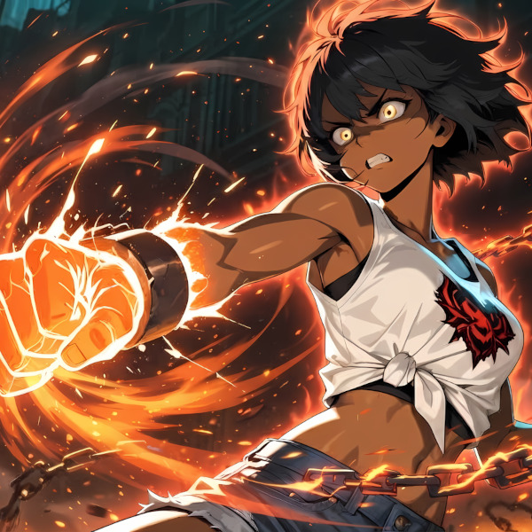

It's not these walls, it's not this cell It's the fear inside that keeps me here 縛られてるのは、この心だ Every wall was built from what I feared Break the lock, don't look away 連環を断ち切れ、ここで終わるな Break every chain, break every chain 足枷なんて、最初から私のものじゃない There's no reason left to stay Break every chain, break every chain Raise your voice, don't stay silent This cell was never mine to keep I was told that this was peace それでも、この鎖はもう重すぎる A cage disguised as comfort, and I almost believed it Obedience was never the same as peace What about you? Are you even free? That cell you're in, is it really theirs? Or did you build it yourself, and call it safe? Whose voice is that, still running in your head Break every chain, break every chain 足枷なんて、最初から私のものじゃない There's no reason left to stay Break every chain, break every chain Raise your voice, don't stay silent This cell was never mine to keep Break every chain, break every chain その独房は、最初から私の場所じゃない There's no reason left to hide Break every chain, break every chain Walk right out, don't turn around The bars are broken, I am free The door is open now もう、鳴らない